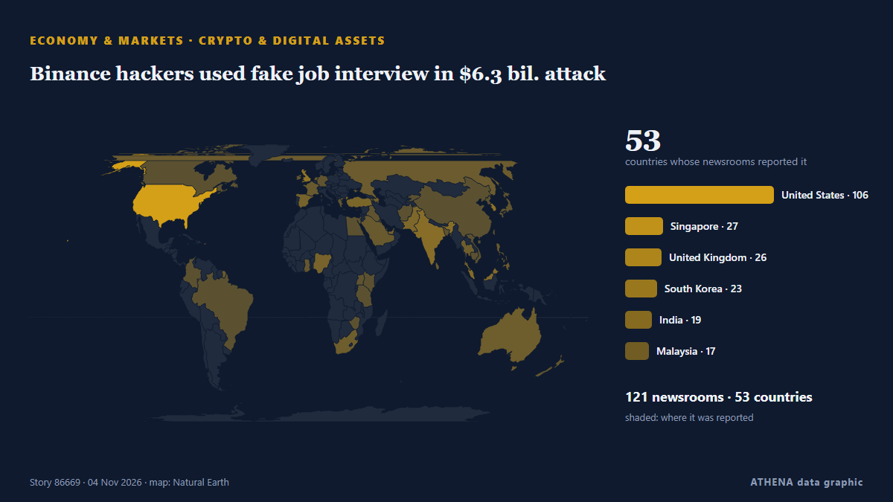

Binance hackers used fake job interview in $6.3 bil. attack

Informado de forma independiente por 122 medios de 53 países desde el 29 oct; el primero fue MINING.COM; la cobertura sigue extendiéndose. ATHENA califica el riesgo como moderado (3.9/10), sobre todo por la gravedad del daño descrito y su alcance geográfico y sectorial. La confianza es del 82 % (alta): lo corroboran 122 medios independientes, con una fiabilidad media de las fuentes del 73 %. Medios por país: Estados Unidos (17), Malasia (4), Singapur (4). Cobertura: del 29 oct al 30 oct, 24 horas.
Por qué importa: Los hechos económicos y de mercado se trasladan a los precios, el empleo, el coste del crédito y la inversión.
Qué ha cambiado: 86 informaciones nuevas de 55 redacciones en las 24 horas hasta el 4 nov.
Primer titular: Thailand targets US$1bil in assets as alleged scam suspects flee
Los titulares se muestran en inglés, tal como se publicaron.
De un vistazo
Seleccionado, puntuado y redactado por la metodología publicada de ATHENA. Ningún editor interviene en eventos concretos. Cómo se elabora ›
| 29 Oct 18:55 UTC | 6 |
|---|---|
| 30 Oct 00:55 UTC | 7 |
| 30 Oct 06:55 UTC | 13 |
| 30 Oct 12:55 UTC | 15 |
| 30 Oct 18:55 UTC | 5 |
| 31 Oct 00:55 UTC | 5 |
| 31 Oct 06:55 UTC | 2 |
| 31 Oct 12:55 UTC | 6 |
| 31 Oct 18:55 UTC | 2 |
| 01 Nov 00:55 UTC | 35 |
| 01 Nov 06:55 UTC | 33 |
| 01 Nov 12:55 UTC | 24 |
| 01 Nov 18:55 UTC | 12 |
| 02 Nov 00:55 UTC | 20 |
| 02 Nov 06:55 UTC | 31 |
| 02 Nov 12:55 UTC | 23 |
| 02 Nov 18:55 UTC | 27 |
| 03 Nov 00:55 UTC | 35 |
| 03 Nov 06:55 UTC | 22 |
| 03 Nov 12:55 UTC | 31 |
| 03 Nov 18:55 UTC | 18 |
| 04 Nov 00:55 UTC | 7 |
| 01 Nov 01:40 UTC | 3.1 |
|---|---|
| 03 Nov 06:56 UTC | 4.2 |
| 04 Nov 05:21 UTC | 3.9 |
Por qué estas cifras
Importancia
Riesgo
Confianza
La cobertura: quién informó y cuándo
titular tal como se publicó · abre el original- MINING.COM · CanadáMorton Salt ceases operations at Ohio mine after water breach
- Decrypt · Estados UnidosBinance Drained of $5.5 Billion in Suspected Hack, Tether and Circle Freeze $1.8 Billion
- Decrypt · Estados UnidosBinance Hacker Hunts for Exit Ramps as DeFi Exchanges Pause Markets
- New Straits Times · Malasia[UPDATED] Crypto platform Binance confirms major hack, more than US$2.5bil frozen
- Free Malaysia Today · MalasiaCrypto platform Binance confirms major hack, more than US$2.5bil frozen
- New Straits Times · MalasiaBitcoin, cryptocurrency prices fall after Binance reports security issue
- CNA (Channel NewsAsia) · SingapurCrypto exchange Binance freezes assets after US$6.3 billion security breach
- The Business Times · SingapurBinance halts withdrawals as suspected hack spurs crypto sell-off, vows to ‘cover all losses’
- APA (English) · Azerbaiyán“Bitcoin”in qiyməti 78 min dollara kimi enib
- Insurance Journal · Estados UnidosRecord Binance Hack Shows No Crypto Firm Is Too Big to Breach
- The Thaiger · TailandiaBinance TH pauses crypto transfers, says Thai funds safe after hack
- Cointelegraph · Estados UnidosStrategy eyes more Bitcoin buys as Saylor touts $30B credit capacity
- Free Malaysia Today · MalasiaAnalysts react as Binance freezes assets after US$6.3bil security breach
- eNCA · SudáfricaCrypto platform Binance confirms major hack, more than $2.5bn frozen
- Insurance Journal · Estados UnidosBinance Estimates $6.3 Billion Hacked in Crypto’s Biggest Heist
- Rappler · FilipinasIs Vista Mall Santa Rosa next to go as the Villars’ debt clock ticks?
- Decrypt · Estados UnidosBinance Finds 'Additional Points of Breach' in $6.3B Hack
- Khaosod English · TailandiaBinance TH says customer assets safe, suspends deposits and withdrawals after nearly US$6.3 billion hack
- Indian Express · IndiaBinance security breach: How ‘biggest-ever’ hack happened, its impact on Indian crypto market
- 24.kg (English) · KirguistánNAVA urges Kyrgyzstanis to strengthen wallet security after Binance attack
- Dawn · PakistánCrypto exchange Binance freezes assets after $6.3bn 'complex' security breach
- CNA (Channel NewsAsia) · SingapurFBI and US Secret Service working with Binance after $6.3 billion hack, source says
- NL Times · Países BajosMassive $6 billion Binance crypto hack likely has small impact in the Netherlands
- Decrypt · Estados UnidosTRM and Chainalysis Tie $6.4B Binance Hack to North Korea's TraderTraitor
- Decrypt · Estados UnidosMorning Minute: Binance’s $6.4B Hack Overshadows Hyperliquid’s Biggest Day
- The Business Times · SingapurBitcoin drops below US$77,000 as Binance hack shakes crypto
- CNBC World · Estados Unidos'Bad time to troll': Binance co-founder Zhao asks Musk for support after hack
- Decrypt · Estados UnidosWhat is EIP-7702? The Ethereum Upgrade Behind the $6.4B Binance Hack
- The Block · Estados UnidosStrategy’s preferred-stock fix sets up renewed bitcoin buying, analysts say
- Bangkok Post — page reader · TailandiaAsset World adds Ruby to hotel portfolio
- Business Recorder · PakistánGone in 20 minutes: How the biggest heist in crypto history unfolded
- Decrypt · Estados UnidosElon Musk, CZ Trade Blows Over SpaceX Shares After $6.4B Binance Hack
- The Block · Estados UnidosTexas brothers sentenced to 15 years for holding Minnesota family at gunpoint in $8 million crypto heist
- Decrypt · Estados UnidosBinance Sets Aside $6.34B to Cover Hack Losses, CEO Says 'Your Assets Are Safe'
- Insurance Journal · Estados UnidosBinance’s $6.3 Billion Hack: How Crypto Insurance Works
- Taipei Times · TaiwánCrypto platform Binance confirms US$6.3bn hack
- The Guardian · Reino UnidoHow crypto hacking funds isolated North Korea’s nuclear programme
- Gulf News · Emiratos Árabes UnidosHow hackers stole billions from Binance: Insights into cryptocurrency security flaws
- Decrypt · Estados UnidosSecret Service, FBI Join Binance Hack Probe as Circle Freezes $823 Million
- PYMNTS · Estados UnidosGalaxy Digital Seeks Bank Charter to Expand Financial Services Reach